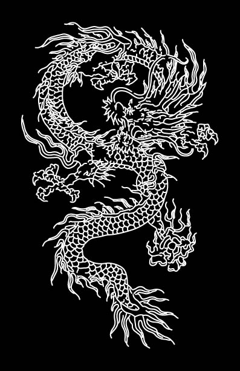
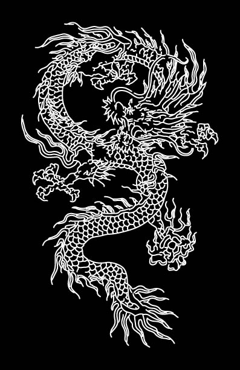

Here you step into a sacred site...it is an ancient esoteric morgue merged with the body of an alien spaceship. The walls are bathed in the velvet glow of blood red light, rusted chains hang from the ceiling, and every cavity of the room is bursting with occult objects. This is the private studio of iconic tattoo artist Paul Booth.
He’s collaborated with tattoo legends like Filip Leu, and contemporary masters of the craft like Yomico. He worked with HR Giger, brought Odd Nerdrum’s paintings to the US for the first time in five years in 2016, and he continually supports contemporary fine artists like Emil Melmouth, Alex Merritt, and Hannah Yata through exhibitions at sister exhibition spaces Last Rites Gallery and Booth Gallery.
Being invited into the sanctuary of Paul Booth, watching him tattoo, and hearing him talk about the tattoo community of past decades was incredibly special. Pioneers of the industry, like Paul, supported the true eccentricity of the culture before it was watered down for the mainstream. Body modification was, then, a sign of true devotion and dedication to the underground...now it seems to be something that can be bought at a price without any real sacrifice. His authenticity and honest approach to his work attracts many...but only those ready to delve head first into alternate realities will ever truly understand it.
Well, I did my first tattoo in ‘98 and I’ve always been kind of the rebellious type of person, so..there's a few things that got me into tattooing. One was getting a tattoo and realizing how cool it would be to make them and it was the ritualistic side of it that I loved. The smell of green soap...the whole pain...everything was intriguing. It really was about rebellion as well. Like when I got my head and part of my face tattooed, I got it to be rebellious...and nowadays it's a popular thing to do so now the little old ladies that I was looking to scare in the grocery store are coming up and patting my head! I’ve been outsmarted! I didn’t plan on that. So, that’s kind of my personal mentality when it comes to tattooing. I never did it to fit in. It was more about reassuring myself that I’m not “in”.
I think absolutely tattooing has a ritualistic side to it but not in the sense of, ya know, sacrificing animals and such...but it is a ritual in itself. The whole idea of going to the tattoo shop, getting a new tattoo, you’re all excited, it’s a special day...getting nervous, sitting in the chair and enduring pain, it becomes its own ritual. Whatever the setting really.
My mother told me, when I was in my highchair, I always went for the black crayon. And that was my first pick every time...I know that when I was nine, maybe ten, I blacked out the windows to my room. My mom always supported my work. And that outlet was very important for me, because it was days of hell being in catholic school...but that’s a whole other interview. But...she was a big support for me, so art was always my go to. I won a national poster contest in the sixth grade, and it was a real big thing...you gotta see the pictures. It’s incredible. But it’s always been art. That’s how I got attention as an only child so I drew more pictures. And yeah...basically...by the time I got to tattooing I had already been an airbrush artist, painting murals on cars, hot rods and motorcycles. I was called the Mural Man in high school. So, when I got to tattooing, I implemented airbrush techniques and thoughts and I saw them….the amount of pressure you apply, how you wisp your hand around, the technical stuff. And hurtin’ people seemed kind of cool too.
I come from another age...so you’ll have to adapt my advice to today's ways I guess. But for me, you have to be fully committed because this is not just about art, it's also about the technical process, and it's about ethics too. And you're not going to learn that ordering a kit out of the back of a magazine, you know? Don’t forget that these people are devoting their skin to you...it should be a big deal. And..I don’t know...I don’t like to preach...so my advice would just be persevere. Travel if you can. Get tattooed by the people you look up to, and watch how they work and learn from it. There's no better way to learn than to get a tattoo. That’s also the time where you can trap the guy and ask him questions and bug him until he regrets tattooing you!

 
